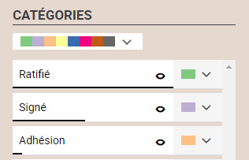
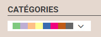
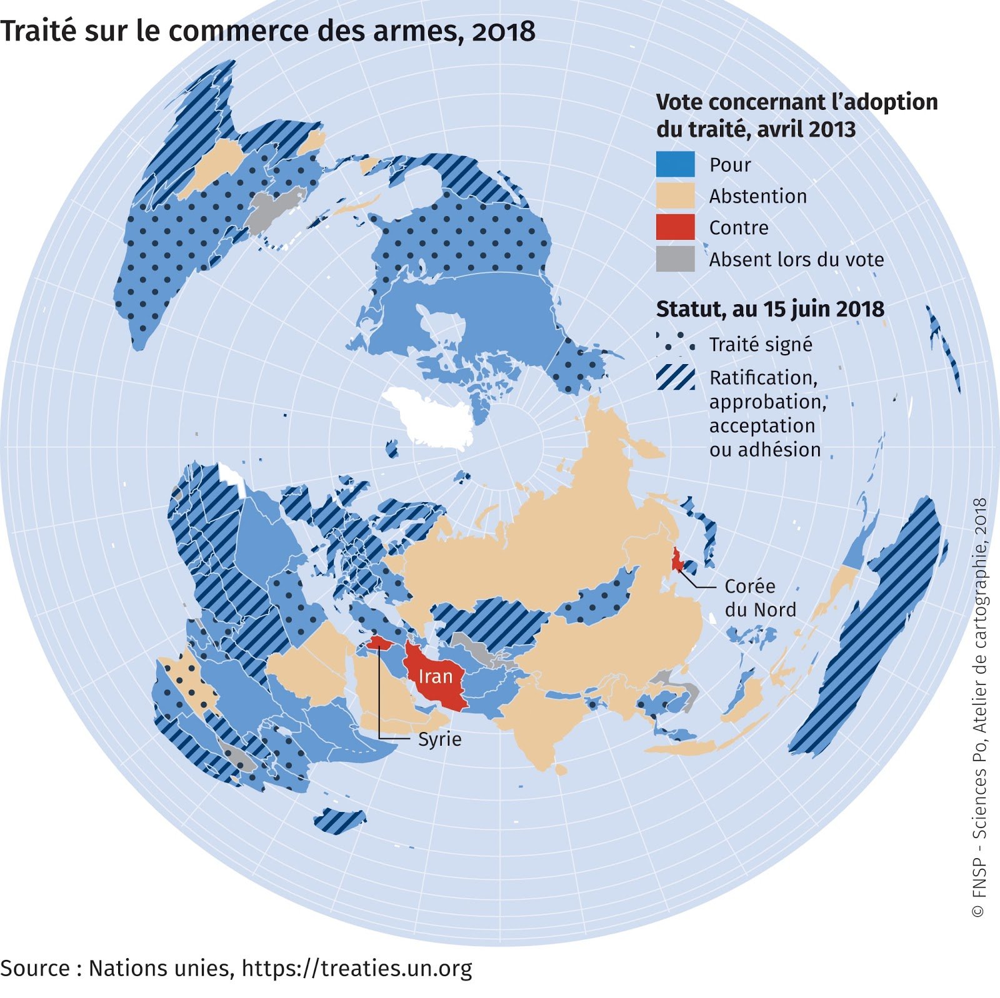

<!DOCTYPE html>
<html lang="fr" class="no-js">
  <head>
    
      <meta charset="utf-8">
      <meta name="viewport" content="width=device-width,initial-scale=1">
      <meta http-equiv="x-ua-compatible" content="ie=edge">
      
        <meta name="description" content="Documentation de Khartis, outil de cartographie thématique">
      
      
        <link rel="canonical" href="http://www.sciencespo.fr/cartographie/khartis/docs/couleurs-differentes/">
      
      
        <meta name="author" content="Sciences Po - Atelier de cartographie">
      
      
        <meta name="lang:clipboard.copy" content="Copier dans le presse-papier">
      
        <meta name="lang:clipboard.copied" content="Copié dans le presse-papier">
      
        <meta name="lang:search.language" content="fr">
      
        <meta name="lang:search.pipeline.stopwords" content="True">
      
        <meta name="lang:search.pipeline.trimmer" content="True">
      
        <meta name="lang:search.result.none" content="Aucun document trouvé">
      
        <meta name="lang:search.result.one" content="1 document trouvé">
      
        <meta name="lang:search.result.other" content="# documents trouvés">
      
        <meta name="lang:search.tokenizer" content="[\s\-]+">
      
      <link rel="shortcut icon" href=".././assets/favicon.ico">
      <meta name="generator" content="mkdocs-0.17.3, mkdocs-material-2.7.2">
    
    
      
        <title>Couleurs différentes - Khartis Documentation</title>
      
    
    
      <link rel="stylesheet" href="../assets/stylesheets/application.8d40d89b.css">
      
        <link rel="stylesheet" href="../assets/stylesheets/application-palette.6079476c.css">
      
    
    
      <script src="../assets/javascripts/modernizr.1aa3b519.js"></script>
    
    
      <link href="https://fonts.gstatic.com" rel="preconnect" crossorigin>
      
        <link rel="stylesheet" href="https://fonts.googleapis.com/css?family=Roboto:300,400,400i,700|Roboto+Mono">
        <style>body,input{font-family:"Roboto","Helvetica Neue",Helvetica,Arial,sans-serif}code,kbd,pre{font-family:"Roboto Mono","Courier New",Courier,monospace}</style>
      
      <link rel="stylesheet" href="https://fonts.googleapis.com/icon?family=Material+Icons">
    
    
      <link rel="stylesheet" href="../stylesheets/extra.css">
    
    
  </head>
  
    
    
    <body dir="ltr" data-md-color-primary="" data-md-color-accent="light-blue">
  
    <svg class="md-svg">
      <defs>
        
        
          <svg xmlns="http://www.w3.org/2000/svg" width="416" height="448"
    viewBox="0 0 416 448" id="github">
  <path fill="currentColor" d="M160 304q0 10-3.125 20.5t-10.75 19-18.125
        8.5-18.125-8.5-10.75-19-3.125-20.5 3.125-20.5 10.75-19 18.125-8.5
        18.125 8.5 10.75 19 3.125 20.5zM320 304q0 10-3.125 20.5t-10.75
        19-18.125 8.5-18.125-8.5-10.75-19-3.125-20.5 3.125-20.5 10.75-19
        18.125-8.5 18.125 8.5 10.75 19 3.125 20.5zM360
        304q0-30-17.25-51t-46.75-21q-10.25 0-48.75 5.25-17.75 2.75-39.25
        2.75t-39.25-2.75q-38-5.25-48.75-5.25-29.5 0-46.75 21t-17.25 51q0 22 8
        38.375t20.25 25.75 30.5 15 35 7.375 37.25 1.75h42q20.5 0
        37.25-1.75t35-7.375 30.5-15 20.25-25.75 8-38.375zM416 260q0 51.75-15.25
        82.75-9.5 19.25-26.375 33.25t-35.25 21.5-42.5 11.875-42.875 5.5-41.75
        1.125q-19.5 0-35.5-0.75t-36.875-3.125-38.125-7.5-34.25-12.875-30.25-20.25-21.5-28.75q-15.5-30.75-15.5-82.75
        0-59.25 34-99-6.75-20.5-6.75-42.5 0-29 12.75-54.5 27 0 47.5 9.875t47.25
        30.875q36.75-8.75 77.25-8.75 37 0 70 8 26.25-20.5
        46.75-30.25t47.25-9.75q12.75 25.5 12.75 54.5 0 21.75-6.75 42 34 40 34
        99.5z" />
</svg>
        
      </defs>
    </svg>
    <input class="md-toggle" data-md-toggle="drawer" type="checkbox" id="drawer" autocomplete="off">
    <input class="md-toggle" data-md-toggle="search" type="checkbox" id="search" autocomplete="off">
    <label class="md-overlay" data-md-component="overlay" for="drawer"></label>
    
      <a href="#couleurs-differentes" tabindex="1" class="md-skip">
        Skip to content
      </a>
    
    
      <header class="md-header" data-md-component="header">
  <nav class="md-header-nav md-grid">
    <div class="md-flex">
      <div class="md-flex__cell md-flex__cell--shrink">
        <a href="http://www.sciencespo.fr/cartographie/khartis/docs" title="Khartis Documentation" class="md-header-nav__button md-logo">
          
            
          
        </a>
      </div>
      <div class="md-flex__cell md-flex__cell--shrink">
        <label class="md-icon md-icon--menu md-header-nav__button" for="drawer"></label>
      </div>
      <div class="md-flex__cell md-flex__cell--stretch">
        <div class="md-flex__ellipsis md-header-nav__title" data-md-component="title">
          
            
              <span class="md-header-nav__topic">
                Khartis Documentation
              </span>
              <span class="md-header-nav__topic">
                Couleurs différentes
              </span>
            
          
        </div>
      </div>
      <div class="md-flex__cell md-flex__cell--shrink">
        
          
            <label class="md-icon md-icon--search md-header-nav__button" for="search"></label>
            
<div class="md-search" data-md-component="search" role="dialog">
  <label class="md-search__overlay" for="search"></label>
  <div class="md-search__inner" role="search">
    <form class="md-search__form" name="search">
      <input type="text" class="md-search__input" name="query" placeholder="Rechercher" autocapitalize="off" autocorrect="off" autocomplete="off" spellcheck="false" data-md-component="query" data-md-state="active">
      <label class="md-icon md-search__icon" for="search"></label>
      <button type="reset" class="md-icon md-search__icon" data-md-component="reset" tabindex="-1">
        &#xE5CD;
      </button>
    </form>
    <div class="md-search__output">
      <div class="md-search__scrollwrap" data-md-scrollfix>
        <div class="md-search-result" data-md-component="result">
          <div class="md-search-result__meta">
            Taper pour démarrer la recherche
          </div>
          <ol class="md-search-result__list"></ol>
        </div>
      </div>
    </div>
  </div>
</div>
          
        
      </div>
      
        <div class="md-flex__cell md-flex__cell--shrink">
          <div class="md-header-nav__source">
            


  


  <a href="https://github.com/AtelierCartographie/Khartis/" title="Aller au dépôt" class="md-source" data-md-source="github">
    
      <div class="md-source__icon">
        <svg viewBox="0 0 24 24" width="24" height="24">
          <use xlink:href="#github" width="24" height="24"></use>
        </svg>
      </div>
    
    <div class="md-source__repository">
      AtelierCartographie/Khartis
    </div>
  </a>

          </div>
        </div>
      
    </div>
  </nav>
</header>
    
    <div class="md-container">
      
        
      
      
      <main class="md-main">
        <div class="md-main__inner md-grid" data-md-component="container">
          
            
              <div class="md-sidebar md-sidebar--primary" data-md-component="navigation">
                <div class="md-sidebar__scrollwrap">
                  <div class="md-sidebar__inner">
                    <nav class="md-nav md-nav--primary" data-md-level="0">
  <label class="md-nav__title md-nav__title--site" for="drawer">
    <span class="md-nav__button md-logo">
      
        
      
    </span>
    Khartis Documentation
  </label>
  
    <div class="md-nav__source">
      


  


  <a href="https://github.com/AtelierCartographie/Khartis/" title="Aller au dépôt" class="md-source" data-md-source="github">
    
      <div class="md-source__icon">
        <svg viewBox="0 0 24 24" width="24" height="24">
          <use xlink:href="#github" width="24" height="24"></use>
        </svg>
      </div>
    
    <div class="md-source__repository">
      AtelierCartographie/Khartis
    </div>
  </a>

    </div>
  
  <ul class="md-nav__list" data-md-scrollfix>
    
      
      
      


  <li class="md-nav__item">
    <a href=".." title="Home" class="md-nav__link">
      Home
    </a>
  </li>

    
      
      
      


  <li class="md-nav__item">
    <a href="../FAQ/" title="FAQ" class="md-nav__link">
      FAQ
    </a>
  </li>

    
      
      
      


  <li class="md-nav__item">
    <a href="../changelog/" title="Changelog" class="md-nav__link">
      Changelog
    </a>
  </li>

    
      
      
      


  <li class="md-nav__item">
    <a href="../contraste/" title="Le contraste (valeurs > symboles)" class="md-nav__link">
      Le contraste (valeurs > symboles)
    </a>
  </li>

    
      
      
      

  


  <li class="md-nav__item md-nav__item--active">
    
    <input class="md-toggle md-nav__toggle" data-md-toggle="toc" type="checkbox" id="toc">
    
      
    
    
      <label class="md-nav__link md-nav__link--active" for="toc">
        Couleurs différentes
      </label>
    
    <a href="./" title="Couleurs différentes" class="md-nav__link md-nav__link--active">
      Couleurs différentes
    </a>
    
      
<nav class="md-nav md-nav--secondary">
  
  
    
  
  
    <label class="md-nav__title" for="toc">Table des matières</label>
    <ul class="md-nav__list" data-md-scrollfix>
      
        <li class="md-nav__item">
  <a href="#dans-quels-cas-utiliser-cette-viz" title="Dans quel(s) cas utiliser cette viz ?" class="md-nav__link">
    Dans quel(s) cas utiliser cette viz ?
  </a>
  
</li>
      
        <li class="md-nav__item">
  <a href="#quels-types-de-donnees-sont-reconnus" title="Quels types de données sont reconnus ?" class="md-nav__link">
    Quels types de données sont reconnus ?
  </a>
  
</li>
      
        <li class="md-nav__item">
  <a href="#parametres-de-la-viz" title="Paramètres de la viz" class="md-nav__link">
    Paramètres de la viz
  </a>
  
</li>
      
        <li class="md-nav__item">
  <a href="#cas-pratiques" title="Cas pratiques" class="md-nav__link">
    Cas pratiques
  </a>
  
</li>
      
      
      
      
      
    </ul>
  
</nav>
    
  </li>

    
      
      
      


  <li class="md-nav__item">
    <a href="../couleurs-ordonnees/" title="Couleurs ordonnees" class="md-nav__link">
      Couleurs ordonnees
    </a>
  </li>

    
      
      
      


  <li class="md-nav__item">
    <a href="../definitions/" title="Definitions" class="md-nav__link">
      Definitions
    </a>
  </li>

    
      
      
      


  <li class="md-nav__item">
    <a href="../discretisation/" title="Discretisation" class="md-nav__link">
      Discretisation
    </a>
  </li>

    
      
      
      


  <li class="md-nav__item">
    <a href="../double-symboles-proportionnels/" title="Double symboles proportionnels" class="md-nav__link">
      Double symboles proportionnels
    </a>
  </li>

    
      
      
      


  <li class="md-nav__item">
    <a href="../how-to-create-a-basemap-for-Khartis/" title="how to create a basemap for Khartis" class="md-nav__link">
      how to create a basemap for Khartis
    </a>
  </li>

    
      
      
      


  <li class="md-nav__item">
    <a href="../importer-des-donnees/" title="Importer des donnees" class="md-nav__link">
      Importer des donnees
    </a>
  </li>

    
      
      
      


  <li class="md-nav__item">
    <a href="../importer-propre-fond/" title="Importer propre fond" class="md-nav__link">
      Importer propre fond
    </a>
  </li>

    
      
      
      


  <li class="md-nav__item">
    <a href="../les-fonds-de-carte-disponibles/" title="Les fonds de carte disponibles" class="md-nav__link">
      Les fonds de carte disponibles
    </a>
  </li>

    
      
      
      


  <li class="md-nav__item">
    <a href="../les-projections-disponibles/" title="Les projections disponibles" class="md-nav__link">
      Les projections disponibles
    </a>
  </li>

    
      
      
      


  <li class="md-nav__item">
    <a href="../les-sources-des-exemples-a-disposition/" title="Les sources des exemples a disposition" class="md-nav__link">
      Les sources des exemples a disposition
    </a>
  </li>

    
      
      
      


  <li class="md-nav__item">
    <a href="../liste-des-visualisations/" title="Liste des visualisations" class="md-nav__link">
      Liste des visualisations
    </a>
  </li>

    
      
      
      


  <li class="md-nav__item">
    <a href="../premiers-pas-avec-Khartis-(1)/" title="premiers pas avec Khartis (1)" class="md-nav__link">
      premiers pas avec Khartis (1)
    </a>
  </li>

    
      
      
      


  <li class="md-nav__item">
    <a href="../premiers-pas-avec-Khartis-(2)/" title="premiers pas avec Khartis (2)" class="md-nav__link">
      premiers pas avec Khartis (2)
    </a>
  </li>

    
      
      
      


  <li class="md-nav__item">
    <a href="../symboles-differents/" title="Symboles differents" class="md-nav__link">
      Symboles differents
    </a>
  </li>

    
      
      
      


  <li class="md-nav__item">
    <a href="../symboles-ordonnes/" title="Symboles ordonnes" class="md-nav__link">
      Symboles ordonnes
    </a>
  </li>

    
      
      
      


  <li class="md-nav__item">
    <a href="../symboles-proportionnels-colores-difference/" title="Symboles proportionnels colores difference" class="md-nav__link">
      Symboles proportionnels colores difference
    </a>
  </li>

    
      
      
      


  <li class="md-nav__item">
    <a href="../symboles-proportionnels-colores-ordre/" title="Symboles proportionnels colores ordre" class="md-nav__link">
      Symboles proportionnels colores ordre
    </a>
  </li>

    
      
      
      


  <li class="md-nav__item">
    <a href="../symboles-proportionnels/" title="Symboles proportionnels" class="md-nav__link">
      Symboles proportionnels
    </a>
  </li>

    
  </ul>
</nav>
                  </div>
                </div>
              </div>
            
            
              <div class="md-sidebar md-sidebar--secondary" data-md-component="toc">
                <div class="md-sidebar__scrollwrap">
                  <div class="md-sidebar__inner">
                    
<nav class="md-nav md-nav--secondary">
  
  
    
  
  
    <label class="md-nav__title" for="toc">Table des matières</label>
    <ul class="md-nav__list" data-md-scrollfix>
      
        <li class="md-nav__item">
  <a href="#dans-quels-cas-utiliser-cette-viz" title="Dans quel(s) cas utiliser cette viz ?" class="md-nav__link">
    Dans quel(s) cas utiliser cette viz ?
  </a>
  
</li>
      
        <li class="md-nav__item">
  <a href="#quels-types-de-donnees-sont-reconnus" title="Quels types de données sont reconnus ?" class="md-nav__link">
    Quels types de données sont reconnus ?
  </a>
  
</li>
      
        <li class="md-nav__item">
  <a href="#parametres-de-la-viz" title="Paramètres de la viz" class="md-nav__link">
    Paramètres de la viz
  </a>
  
</li>
      
        <li class="md-nav__item">
  <a href="#cas-pratiques" title="Cas pratiques" class="md-nav__link">
    Cas pratiques
  </a>
  
</li>
      
      
      
      
      
    </ul>
  
</nav>
                  </div>
                </div>
              </div>
            
          
          <div class="md-content">
            <article class="md-content__inner md-typeset">
              
                
                  <a href="https://github.com/AtelierCartographie/Khartis/edit/master/docs/couleurs-differentes.md" title="Editer cette page" class="md-icon md-content__icon">&#xE3C9;</a>
                
                
                <h1 id="couleurs-differentes">Couleurs différentes</h1>
<h2 id="dans-quels-cas-utiliser-cette-viz">Dans quel(s) cas utiliser cette viz ?</h2>
<p>Pour <strong>figurer des différences / des ressemblances</strong> entre des informations qualitatives. Les <strong>couleurs</strong> différentes distinguent les catégories d’une variable.
Attention ! Dans un souci de visibilité, Khartis ne traitera automatiquement que les 8 catégories les plus rencontrées. A l’utilisateur de choisir manuellement des attributs aux autres. Ou alors de reprendre son jeu de données pour simplifier le nombre de catégories à traiter.</p>
<h2 id="quels-types-de-donnees-sont-reconnus">Quels <a href="../../importer-des-donnees#types-de-donnees-reconnus">types de données</a> sont reconnus ?</h2>
<p>Seules les <strong>données liées à des surfaces</strong> (pays, régions, wards…) sont prises en compte. Khartis colorie alors les polygones selon les informations de la variable choisie.</p>
<h2 id="parametres-de-la-viz">Paramètres de la viz</h2>
<p><strong>Catégories</strong> : Elles s’affichent automatiquement depuis la variable sélectionnée. L’ordre d’apparition est fonction du nombre d'occurrences dans chacune de ces catégories. Ce nombre est symbolisé par le trait horizontal noir sous le nom. Dans l’exemple ci-dessous, les pays qui ont ratifié sont environ deux fois plus nombreux que ceux qui n’ont que signé.</p>
<p></p>
<p><strong>Pré-sélections de couleurs</strong> : Khartis propose 4 palettes de couleurs pré-établies, plus ou moins contrastées/pastels.</p>
<p></p>
<p><strong>Personnalisation de la couleur</strong> : l’utilisateur peut affiner les différences/ressemblances en choisissant ses propres couleurs. Par exemple, un petit ensemble de pays, peu visibles, pourra prendre un ton foncé alors qu’un groupe très étendu aura une teinte plus douce.</p>
<h2 id="cas-pratiques">Cas pratiques</h2>
<p><strong>1 : Quel est l’encadrement du commerce mondial des armes ?</strong><br />
Carte extraite de « Proliférations » Espace mondial l'Atlas, 2018, [en ligne], consulté le 06/12/2018, URL:
<a href="https://espace-mondial-atlas.sciencespo.fr/fr/rubrique-(in)securites/article-4A04-proliferations.html">https://espace-mondial-atlas.sciencespo.fr/fr/rubrique-(in)securites/article-4A04-proliferations.html</a>
Cette carte essaie de montrer 2 choses : d’une part le vote des Etats au moment de l’adoption du Traité (en avril 2013) et d’autre part leur engagement depuis. Les “bons élèves” sont les Etats qui cumulent du bleu (vote POUR) et des hachures.</p>
<p></p>
<p>Accès au <a href="../.assets/data/4-Couleurs-differentes-Traite-commerce-armes-2018.csv">dataset pour refaire la carte</a><br />
Accès au <a href="../.assets/data/4-Couleurs-differentes-Traite-commerce-armes-2018-Projet-Khartis.kh.zip">projet Khartis</a> de la carte du Traité sur le commerce des armes</p>
                
                  
                
              
              
                


              
            </article>
          </div>
        </div>
      </main>
      
        
<footer class="md-footer">
  
    <div class="md-footer-nav">
      <nav class="md-footer-nav__inner md-grid">
        
          <a href="../contraste/" title="Le contraste (valeurs > symboles)" class="md-flex md-footer-nav__link md-footer-nav__link--prev" rel="prev">
            <div class="md-flex__cell md-flex__cell--shrink">
              <i class="md-icon md-icon--arrow-back md-footer-nav__button"></i>
            </div>
            <div class="md-flex__cell md-flex__cell--stretch md-footer-nav__title">
              <span class="md-flex__ellipsis">
                <span class="md-footer-nav__direction">
                  Précédent
                </span>
                Le contraste (valeurs > symboles)
              </span>
            </div>
          </a>
        
        
          <a href="../couleurs-ordonnees/" title="Couleurs ordonnees" class="md-flex md-footer-nav__link md-footer-nav__link--next" rel="next">
            <div class="md-flex__cell md-flex__cell--stretch md-footer-nav__title">
              <span class="md-flex__ellipsis">
                <span class="md-footer-nav__direction">
                  Suivant
                </span>
                Couleurs ordonnees
              </span>
            </div>
            <div class="md-flex__cell md-flex__cell--shrink">
              <i class="md-icon md-icon--arrow-forward md-footer-nav__button"></i>
            </div>
          </a>
        
      </nav>
    </div>
  
  <div class="md-footer-meta md-typeset">
    <div class="md-footer-meta__inner md-grid">
      <div class="md-footer-copyright">
        
          <div class="md-footer-copyright__highlight">
            Creative Commons CC BY NC ND
          </div>
        
        powered by
        <a href="http://www.mkdocs.org">MkDocs</a>
        and
        <a href="https://squidfunk.github.io/mkdocs-material/">
          Material for MkDocs</a>
      </div>
      
        
      
    </div>
  </div>
</footer>
      
    </div>
    
      <script src="../assets/javascripts/application.b438e6c5.js"></script>
      
        
        
          
          <script src="../assets/javascripts/lunr/lunr.stemmer.support.js"></script>
          
            
              
              
                <script src="../assets/javascripts/lunr/lunr.fr.js"></script>
              
            
          
          
        
      
      <script>app.initialize({version:"0.17.3",url:{base:".."}})</script>
      
        <script src="../extra.js"></script>
      
    
    
      
        <script>!function(e,a,t,n,o,c,i){e.GoogleAnalyticsObject=o,e.ga=e.ga||function(){(e.ga.q=e.ga.q||[]).push(arguments)},e.ga.l=1*new Date,c=a.createElement(t),i=a.getElementsByTagName(t)[0],c.async=1,c.src="https://www.google-analytics.com/analytics.js",i.parentNode.insertBefore(c,i)}(window,document,"script",0,"ga"),ga("create","UA-78393617-2","Khartis"),ga("set","anonymizeIp",!0),ga("send","pageview");var links=document.getElementsByTagName("a");if(Array.prototype.map.call(links,function(e){e.host!=document.location.host&&e.addEventListener("click",function(){var a=e.getAttribute("data-md-action")||"follow";ga("send","event","outbound",a,e.href)})}),document.forms.search){var query=document.forms.search.query;query.addEventListener("blur",function(){if(this.value){var e=document.location.pathname;ga("send","pageview",e+"?q="+this.value)}})}</script>
      
    
  </body>
</html>